- My game has crashed, what should I do?
- Do not launch the game again, copy the log file and send it to one of the developers.

- Where can I find my log?
- Follow the path below and find the file client_log.txt
(%USERNAME% replace with your username)
- How can I contact the developers?
- You can contact one of the developers using our Discord, VK, Instagram. All links can be found in the tab \"Contacts\"
- Some of my mods do not work or work incorrectly, what should I do?
- Our server has an anti-cheat system installed, it blocks mods that give you an advantage over other players.
- I noticed a player who uses game bugs to his advantage, what should I do?
- Collect enough evidence and provide it to one of the developers or moderators.
- I want to cooperate!
- If you want to help the project in some way - contact one of the developers and provide a small dossier about yourself.